About
About Projects
Projects Games
Games Stories
Stories Store
Store Hobby
Hobby Notes
Notes How-to
How-toThis page documents small sewing projects that were done either by hand, or with a sewing machine, and sometimes using a speedy stitcher(sewing awl).
See my more elaborate sewing projects: Mini Dodger, Sailboat Upholstery, Boom Tent, Grinder Bag, Sanding Disc Bag and Winch Covers(yes, they look like fez).
Army-style hat
January 11 2026

Devine & I really love army-style caps. A store in town sells them, but they only look good for about 3 years before the fabric starts to fade and go. The store doesn't always sell these hats, either (they didn't this year). For a while we both wondered if it would be possible to make the same hat again ourselves, using the old hat as a template. We each made our own hat.
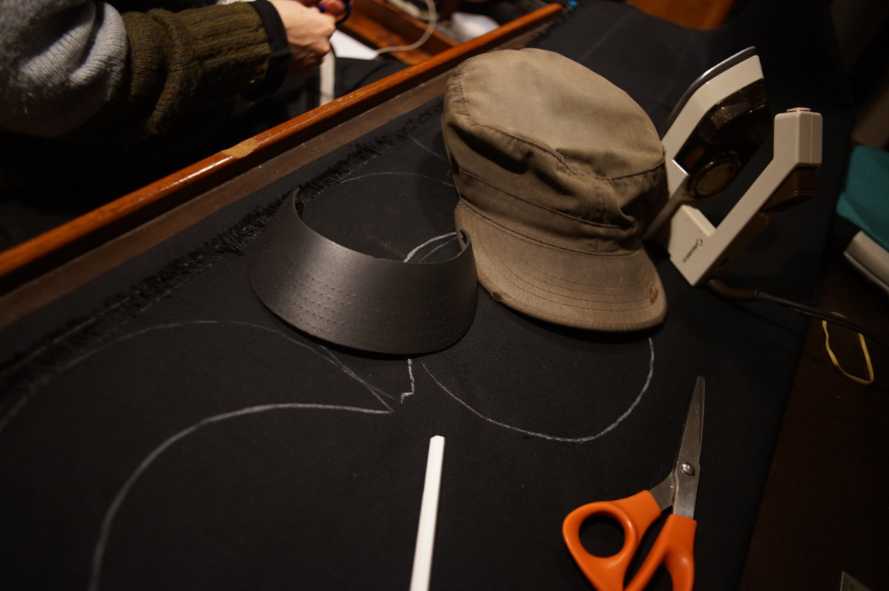We went to Gala Fabrics in Victoria and bought 1 m of 12 oz black cotton canvas. You actually don't need that much fabric to make 2 hats, but we wanted extra to experiment with.
I took my old hat apart, studying it as I went along so I could put it back together the same way, ripping open each stitch, then used a steam iron to open and flatten out the seams. Flat seams makes it easier to draw more accurate templates.
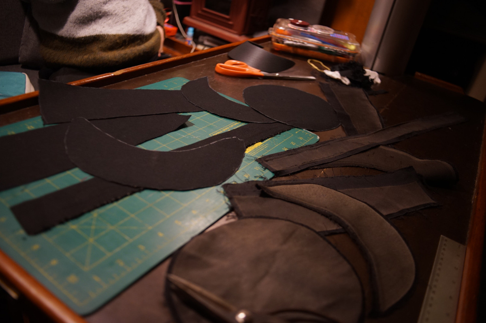I traced around each piece of fabric making up the hat, and cut them out. When covering finished seam, I made my own bias tape, and stuck it on first with some basting tape to make it easier to position. I used basting tape a lot throughout this project.
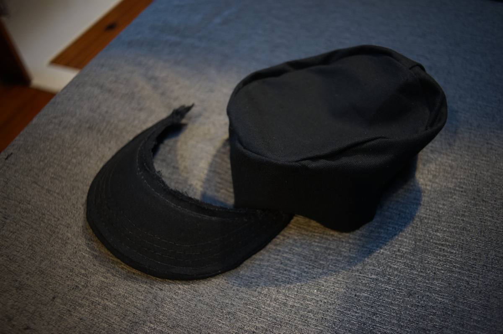The visor was the scarier part of the project, I had to remake the cover twice to ensure a good fit. I reused the visor from the hat I took apart, it was just a piece of plastic. Our Sailrite machine had no issue going through this material.
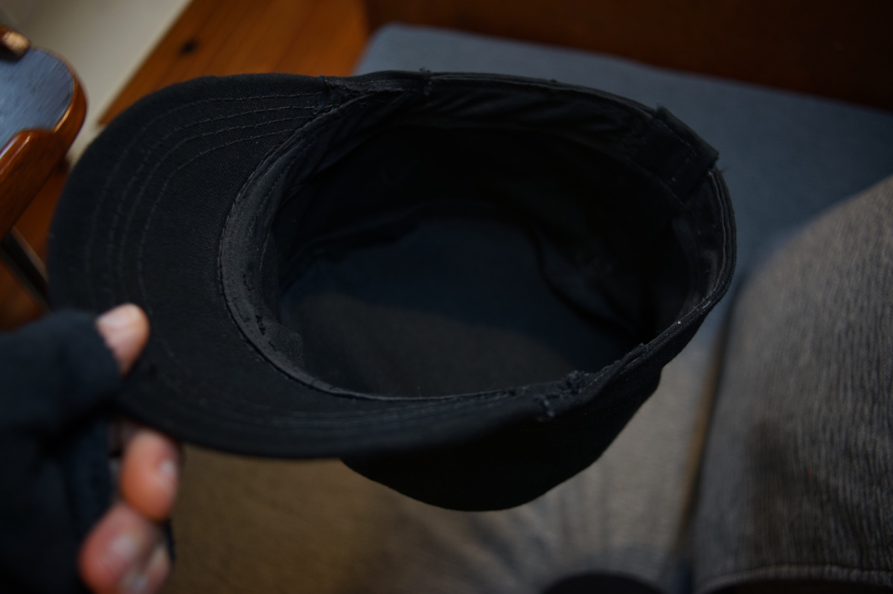In the end, I had to cut and enlarge the back of the hat after realizing it was too snug on my head. It was dishearterning, I took extra care putting it together, covering all of the seams, using very small stitches so it was nice and tight, so ripping it all open again was not easy. In the end, I had to use more brutish means, cutting it open, and re-patching the back up again using more fabric. 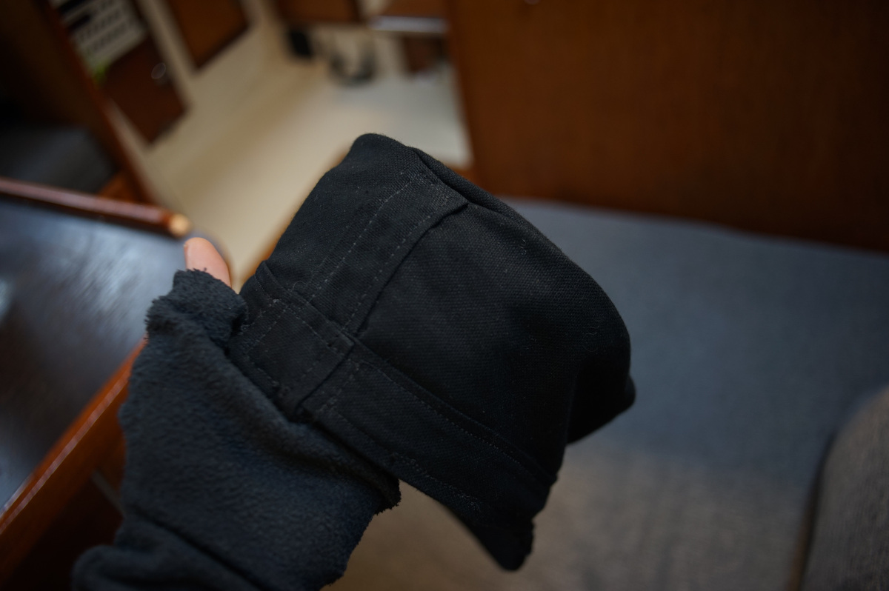
Coloring pencil case
April 20th 2025
 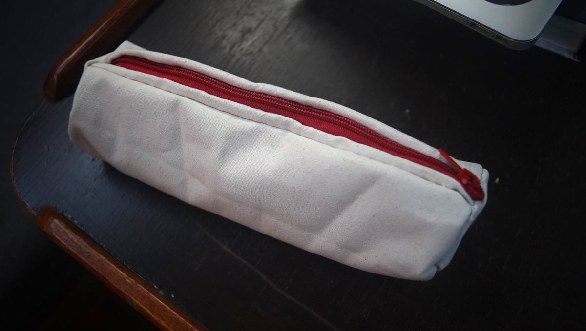
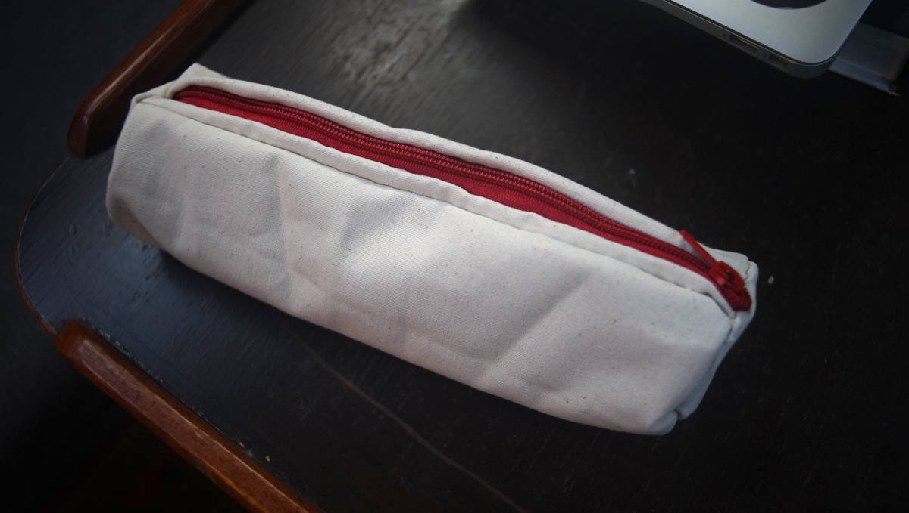
Hand-stitched a case for my evergrowing collection of coloring pencils :>!
I used cotton canvas leftover from a previous project and harvested a zipper from a basmati rice bag[124 KiB](the kind Dev & I like to buy comes in a burlap bag with a zipper).
{kind=link}
Sleeping mask
January 15th 2025
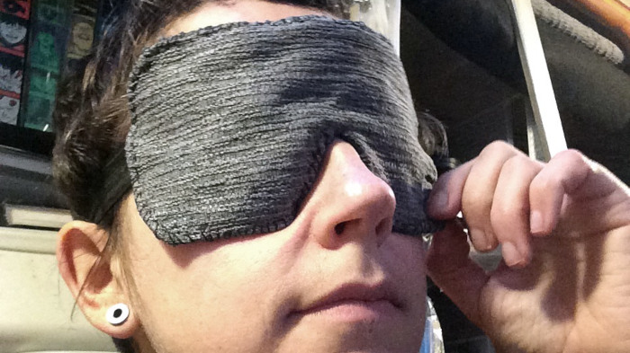My eyes are very dry. I use eye ointment at night to keep my eyes hydrated, but I was told that using a sleeping mask on top of that will help trap moisture (i may sleep with my eyes partially open at night...). The mask is very crude, but I've spent a night with it already and it is very comfortable.
I used an elastic band I had lying around, I think it was once used to keep a yoga mat rolled up (my friend forgot hers here many years ago, the yoga mat is long gone but I still had the elastics).
Arm warmers
November 21st 2024
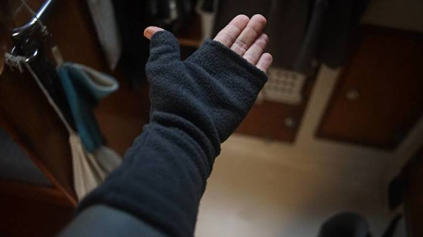 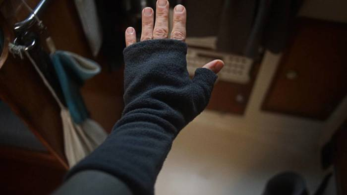Because it's getting cold aboard, I got a used fleece airplane blanket from a thrift store and used it to make 4 pairs of arm warmers for myself and for Devine. I stitched these up by hand. I drew the template on the fabric, planning the design so that I would only have to sew one side. I hemmed the edges(by folding the edges) for the forearm and finger exits, but haven't bothered to do it for the thumb because fleece doesn't unravel and wont fray.
When hemming the edges by folding, I was careful to keep the stitching loose(zigzag stitch would also help but I was too lazy to do it) to allow for some stretch.
Winter Jacket
November 2nd 2023

Replacing a jacket zipper for the first time. The teeth of the zipper were so worn at one end they couldn't bite, and the coat zipper would keep opening from the bottom.
Did one side, now doing the other. The other side is a bit tougher cause there's more layers. The stitching it strong but isn't super clean cause I have to do it by hand(too many layers for the sewing machine).
I learned a few things while trying to do this fix. For instance, there are many ways that zippers fail. It's not always necessary to replace the whole thing. Sometimes a new zipper slider or bottom stop is enough to fix a coat opening from the bottom.
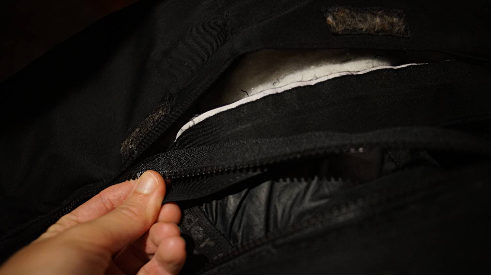It's possible to buy parts separately or to get a kit. I had to replace the whole thing because the teeth were too badly worn.
The hardest bit was getting the old stitches out to get the zipper off (was very well put together).
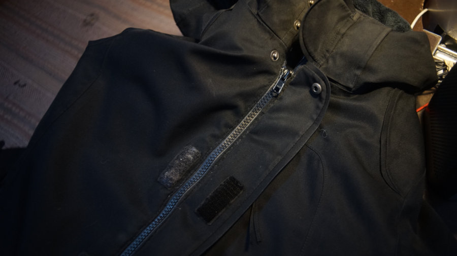Tea Cosy
April 23rd 2023
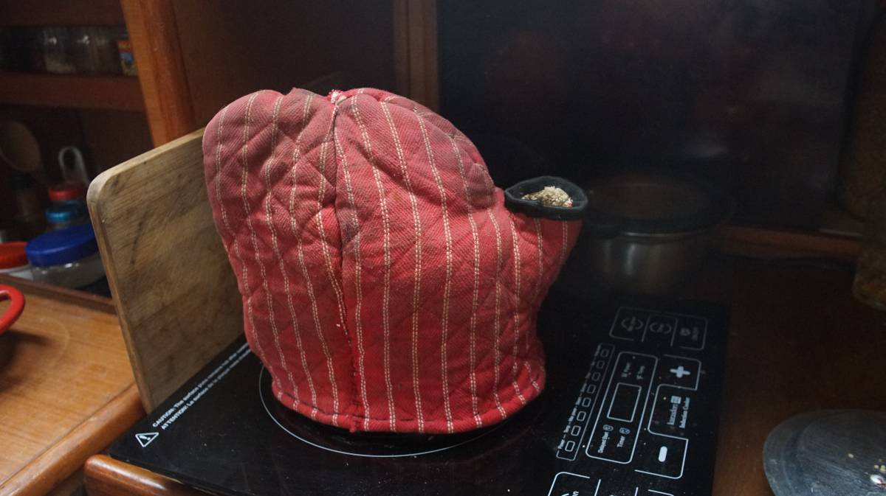A friend gave us his old oven mitts when he moved out of his boat last year(spring 2022). I cut them up, combined, and re-stitched them into a sort of tea cosy for my percolator(which I use as a kettle).
When I need hot water refills for tea I can keep water warm for a while this way.
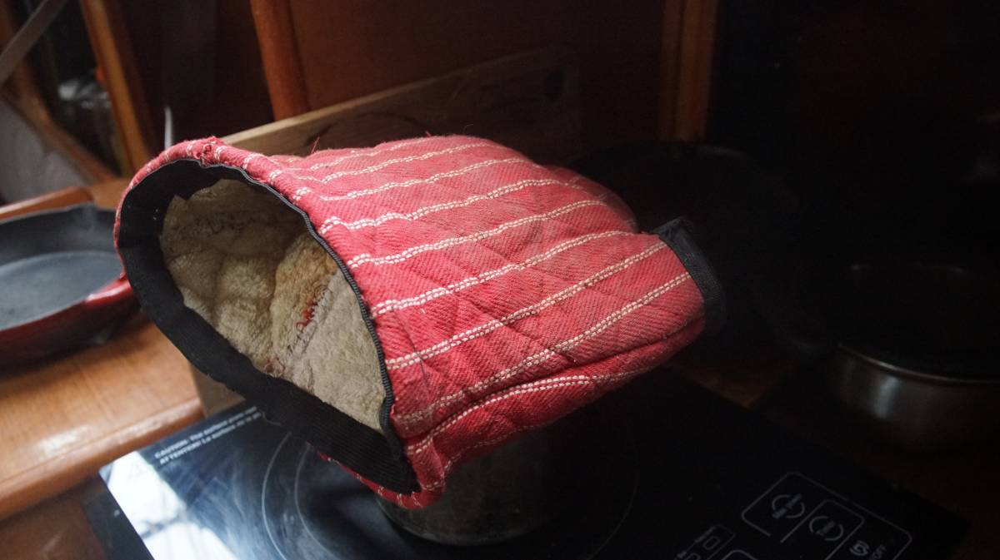The two mitts became one. I stitched on an old elastic band I had around the thumb/spout opening and the bottom of the tea cosy to hide the seams.
Curtain
March 21st 2021

Made a little curtain for an area where we keep spices and drinks. Shields them from light, and will keep them from falling out of that space.
The curtain has two pockets sown in, with a wooden dowel on each end.

The rabbit fabric was a gift from a friend in Japan. Been carrying it around a while, but only just found a use for it!
Cushions
March 14th 2021

The cushions we had aboard Pino were old, and flat. I cut them open today, and removed the inside and instead stuffed them with some extra clean towels, rags and winter socks. We don't have a ton of storage space, so this helps :D. Now the cushions are nice and plump.

Did not have extra zippers or buttons on hand to close the cushions up again, so I used some Japanese coins from our last trip (the 5 yen with the hole in the middle) as buttons with some bits of old paracord.